L’étudiant n’est pas un conteneur que vous devez remplir mais un flambeau que vous devez allumer
La vie étudiante, à vrai dire, prend parfois des allures de cocktail explosif. C’est une période particulièrement intense pour l’individu – qui voit ses années d’études se déployer autour de trois grands axes ; la socialisation aux normes et à la vie post-secondaire, la composition d’un projet d’apprendre, et la préparation d’un projet professionnel ou d’avenir. Une série de changements donc, qui apporte son lot de joie, de peine... Et où les moments de stress sont légion et ponctuent le parcours de l’étudiant, au-dessus duquel semble alors planer un sentiment d’urgence permanent. Le flambeau manque de s’embraser ; à l’approche imminente des partiels, face au jonglage parfois délicat entre job étudiant et études, devant l’accumulation pléthore de deadlines, à la difficulté à trouver un logement ou bien l’incertitude et les tiraillements quant à l’orientation…
Des difficultés et des angoisses, exacerbées par la situation sanitaire. Parmi les effets notoires de la pandémie du COVID-19 : l’adaptation des modes de vie par les voies du numérique ; soit la numérisation généralisée de nos activités quotidiennes en vertu des politiques de restriction des déplacements et contacts humains, pour endiguer l’épidémie. Lors des périodes de confinement notamment, nombre de personnes – en France et à travers le monde – ont vu leur temps passé en ligne, augmenter en flèche. Dans ce contexte si singulier, Internet a fortiori, a pris une place prégnante dans nos sociétés de sorte qu’y accéder est devenu pour beaucoup, le moyen privilégié voire indispensable pour travailler, s’instruire ou maintenir des relations sociales.
Les étudiants, parmi d’autres franges de la population, en plus d’être amenés à suivre leurs cours à distance, ont vu leur usage d’Internet s’accroître sur les plateformes de réseaux sociaux numériques, afin de répondre à un besoin de communiquer, de se tenir informés du monde dont ils ont pu se sentir isolés. Inégaux face à la situation sanitaire, les étudiants ont été confrontés à une existence en dents de scie, démotivés voire précarisés par la pandémie. L’enjeu de la santé mentale des populations étudiantes, bien que précédant la crise sanitaire liée au coronavirus, en ressort aggravé par des sources d’inquiétudes et d’angoisse nouvelles.
La pandémie aura donc mis en lumière, la question du bien-être émotionnel des populations étudiantes. La gestion de ces situations difficiles et anxiogènes s’accompagne dès lors, de différents mécanismes d’adaptation psychologique (ou coping mechanisms en anglais). Le soutien émotionnel ou l'humour sont deux exemples. En effet, chercher un soutien externe permet d’éviter l’isolement ; un soutien émotionnel (distinct du soutien instrumental, qui désigne une assistance directe par des services tangibles) permet, via des échanges sur les ressentis émotionnels, d’apporter du mieux-être et une forme de réconfort. Tourner en dérision ces situations stressantes peut en outre, aider les individus à les rendre plus légères, plus soutenables : l’humour devenant alors une forme d’exutoire. Sur Internet, ces deux mécanismes ont pu être recherchés par les étudiants au travers de publications sur les réseaux sociaux numériques – suivant un mode d’expression bien particulier et propre au net : le mème.
L’utilisation des mèmes Internet peut paraître empreinte de légèreté et sans consistance mais, au fond… On peut se poser la question de la motivation et du sens octroyé à tout cela ? Au fil de notre exploration, nous essayerons de dépasser ces lieux communs, et voir comment les mèmes, au-delà de constituer de simples blagues absurdes et vaines, se révèlent être de véritables objets d’étude des phénomènes sociaux et des attitudes culturelles en ligne.
En s’aventurant sur les plateformes de réseaux sociaux numériques, tels qu’Instagram, Twitter ou encore Facebook – il est possible de voir un seul et même contenu, circuler pendant des semaines ; être relayé et détourné de mille et une façons différentes – pour à terme, finir par disparaître de ces plateformes ou reparaître mais, de manière sporadique. Les mèmes Internet sont de moins en moins visibles pour les utilisateurs des réseaux sociaux en ligne, à mesure que le nombre de personnes qui les relaient diminue : leur mode de propagation suit ainsi une logique de contiguïté (ils se diffusent de proche en proche) selon un principe de réplication : un individu voit un mème sur une plateforme de réseau socio-numérique, se l’approprie en le personnalisant, le partage à son tour, et ainsi de suite. La diffusion des mèmes, difficile à prédire ou à modéliser, peut alors être comparable à celle d’un virus - d’où le terme de viralité qui leur est par ailleurs souvent associé.
Un exemple de mème : la photographie prise le 20 janvier 2021, lors de la 42e cérémonie d’investiture du président des Etats-Unis Joe Biden, par un journaliste de l’AFP ; où l’on voit Bernie Sanders assis, bras et jambes croisés, les mains parées de moufles tricotées.
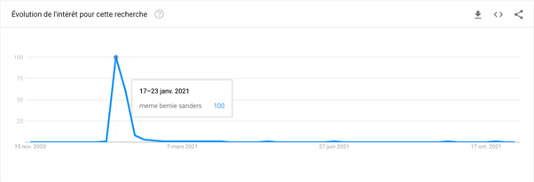 Données extraites de l’outil Google Trends ; On peut voir sur ce graphique, une courbe modélisant l’évolution de la fréquence à laquelle, la recherche intitulée “meme bernie sanders” a été tapée dans le moteur de recherche Google. La cérémonie d’investiture ayant eu lieu le 20 janvier 2021, on observe un pic de recherche, entre le 17 et le 23 janvier 2021 - un intérêt qui correspond donc au date de la publication de la photo et sa soudaine viralité, au fur et à mesure de son appropriation sur le net par les utilisateurs. Puis, une chute de la fréquence de recherche en l’espace d’un mois seulement. On voit qu’après coup, sur le long terme (du 7 mars au 17 octobre 2021) le mème de Bernie Sanders continue d’être recherché - comme l’indique les mouvements de la courbe.
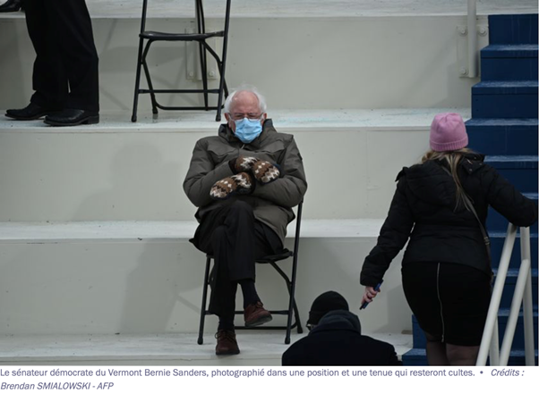Du fait de leur nature numérique, les mèmes peuvent constituer des ponts culturels à l’échelle internationale. Le mème de Bernie Sanders, entre autres, a pu faire le tour du monde - physiquement (en étant relayé par des personnes réparties sur plusieurs régions du globe cf. données extraites sur Google Trends) et figurativement (comme on peut le voir sur les images ci-dessous).
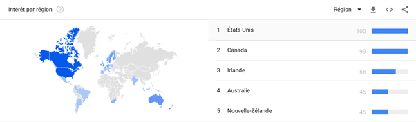Données extraites de l’outil Google Trends : sur cette carte, on peut voir la fréquence de recherches liées au mème de Bernie Sanders, dans plusieurs régions du monde. Importante en Amérique du Nord (avec les Etats-Unis, en tête) : la popularité de la recherche paraît suivre une certaine logique géographique (la photo étant prise aux Etats-Unis, dans un contexte important pour l’agenda politique étasunien). On voit en outre, que des recherches ont pu être menées dans d’autres régions, à l’instar de l’Océanie (Nouvelle-Zélande, Australie), en Afrique du Sud, en Amérique du Sud ou encore en Europe - de l’Ouest et du Nord.
Il aurait pu être intéressant d’observer les dates de ces recherches selon les régions géographiques ; de telles données auraient permis une meilleure appréhension de la logique de propagation du mème sur Internet (suit-il une logique partant d’un épicentre - ici les Etats-Unis, vers les autres régions du monde ? Ou bien, l’accès à Internet rompt-il complètement cette logique là, pour une diffusion plus disséminée ?). 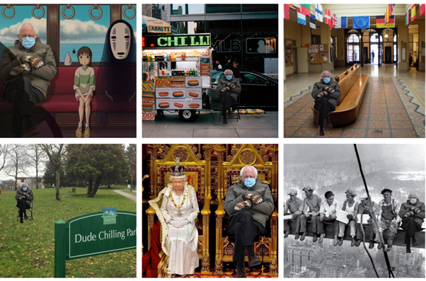 Bernie à New York, Bernie à SciencesPo, Bernie dans un parc à Vancouver, ou Bernie aux côtés de la reine Elizabeth II… Ce mème a été repris et détourné, comme le montre ces exemples, selon une multitude de contextes et de lieux, au gré de l’inspiration et créativité (pouvant paraître sans bornes) des internautes.
Dès lors, nous pourrions voir dans leur utilisation, l’émergence d’une cyberculture ou culture Internet commune pour tous les internautes. Une idée revêtant de l’idéal hippie promulgué par les premiers utilisateurs d’Internet. Ces derniers ont cherché à mettre en valeur la liberté et la vivacité de l’humour pouvant s’exprimer en ligne – et qui n’existaient alors pas au sein des communautés hippies dites réelles. Cette vision de contre-culture, propre à l’usage du web, semble marquer le principe des mèmes Internet. Cependant, force est de constater que si des références propres aux mèmes peuvent être partagées dans plusieurs régions du globe, des différences culturelles et de pratiques persistent. Car le mème, c’est avant tout un outil de communication. En se transmettant, les mèmes sont alors transformés, personnalisés par les utilisateurs qui les créent et les partagent ; le principe de réplication caractérisant leur mode de diffusion ne donne donc pas toujours, si ce n’est jamais, l’identique. Le mème change selon l’environnement et les circonstances de contact. Aussi, observons-nous des réappropriations diverses et spécialisées : autour d’aires géographiques (villes, régions, universités…), de centres d’intérêts (musique, films, animaux…) ou bien encore, au sujet d’idéologies sociales et politiques - autour desquels s’agrègent les usagers, faisant du mème, un objet fédérateur.
Ainsi, dans quelle mesure l’utilisation des mèmes Internet peut générer parmi les internautes, des distinctions fondées sur le sentiment d’appartenance ?
Après un retour sur la méthodologie employée lors de notre enquête et les réflexions personnelles et subjectives que nous en tirons ; Nous étudierons trois hypothèses de recherches, pour répondre à notre problématique. Tout d’abord, nous explorerons l’idée que l’utilisation des mèmes sous-tend une forme d’intertextualité, soit la mobilisation de certains codes et références qui, du fait qu’ils ne soient pas accessibles à tous et toutes, constituent un premier critère de différenciation (hypothèse 1). Ensuite, nous étudierons les dynamiques liées aux réactions et sentiments procurés par le mème qui, du fait qu’ils soient partagés par plusieurs, renforcent le sentiment d’appartenance à un seul et même groupe (hypothèse 2). Et enfin, le mème pourrait encourager une mobilisation politique voire partisane et constituerait alors, un vecteur efficace de revendications politiques autour desquelles s’agrégeraient les individus à mesure qu’ils adhèreraient à ces dernières (hypothèse 3).
Le terrain de notre enquête prend la forme d’un corpus, composé de six groupes Facebook spécialisés dans la publication de mèmes, et gérés par des étudiants pour des étudiants. Un autre point commun entre ces groupes, est leur affiliation à des universités ou écoles post-bac situées en région parisienne et proposant des formations en Sciences sociales (plus particulièrement en Science politique). Pourquoi avoir fait le choix de focaliser notre étude sur un tel corpus ? Tout d’abord, pour des raisons pratiques : du fait que nous habitons dans la même aire géographique et que nous suivons une formation spécialisée en Sciences humaines et sociales et politique, notamment - il était plus facile pour nous de comprendre les mèmes en rapport avec la région et le domaine d’études qui sont les nôtres et ce faisant, de les analyser. Les thèmes auxquels ces mèmes renvoient ainsi que leur signification, nous semblent plus familiers et intelligibles. Bien plus que des mèmes affiliés, par exemple, à des formations de type classes préparatoires scientifiques. Nous sommes conscients par conséquent, que – du fait de notre subjectivité propre – nous constituons tous les trois, des sujets pour notre étude. Nos expériences se reflétant, entre autres, dans nos niveaux de compréhension des mèmes et autres données et ressources auxquelles nous sommes confrontés lors de l’enquête. La question du choix de la plateforme a de même été posée – les mèmes étudiants étant publiés sur une multitude de réseaux sociaux numériques. Aussi bien partagés dans des espaces tels que les subreddit ou autres forums de discussion en ligne, que dans des conversations de messageries privées telles que WhatsApp ou Signal, par exemple. A l’évidence, les conversations privées ne pouvant constituer des terrains d’enquête pour notre exploration – notre terrain devant être aisément (et légalement) consultable, nous avons opté pour les groupes d’étudiants Facebook, plus adéquats pour l’étude des phénomènes de groupe et d’appartenance. Leur mise en place par la plateforme ayant justement pour fin, (cf. la description donnée par Facebook) la création d’un groupe social qui désigne un ensemble d’individus en relations directes ou indirectes, se reconnaissant comme membres d’un collectif – en opposition aux personnes qui n’en sont pas membres.
Description des groupes Facebook donnée par la plateforme, dans la rubrique Page d’aides
: Les groupes sont des endroits qui permettent de communiquer sur des centres d’intérêt communs avec certaines personnes. Vous pouvez créer un groupe pour tout ce que vous souhaitez (par exemple, une réunion de famille, l’équipe de sport que vous rejoignez après le travail ou encore votre club de lecture).
Nous avons pendant un temps, hésité à étudier les pratiques de publication de mèmes sur Reddit et Instagram. En restreignant notre étude à une seule plateforme, nous avons pu éviter de trop nous éparpiller lors de nos recherches. De plus, un réseau social Internet comme Reddit, accorde une importance assez minime aux profils de ses utilisateurs – souvent anonymes et assez hermétiques, par ailleurs – ce qui ne permet pas d’étudier pleinement, les dynamiques liées aux questions de l’identité (commune, personnelle, etc.) quant à l’idée d’appartenance à un groupe. Il est en outre, difficile de consulter les anciennes publications – le contenu étant constamment changeant selon la popularité des contenus qui ne sont, de surcroît, pas archivés. A contrario, les groupes Facebook permettent d’étudier plus aisément les interactions, les profils des utilisateurs et de retrouver des anciennes publications ; grâce notamment, à une barre de recherche où peuvent être inscrits des mots clés – susceptibles d’apparaître dans les descriptions de publications - ou bien, en inscrivant le nom de membres du groupe, ce qui permet de trouver les publications que ces derniers ont publiées ou les commentaires qu’ils ont pu laisser. L’onglet « contenus multimédias » permet en outre, de facilement visualiser, se retrouver parmi l’ensemble des photos et vidéos publiées sur le groupe. L’activité sur ces groupes Facebook de mèmes étudiants (c’est le cas de trois des six groupes de notre corpus) peut être couplée par une présence sur Instagram, via la publication de mèmes sur un compte homonyme. Toutefois, nous avons pu observer que l’activité y était assez irrégulière et moins importante que sur les groupes Facebook (peu d’abonnés, les interactions sous la forme de commentaires ou de likes autour des posts/mèmes publiés sont rares, etc.). Les groupes du corpus, en plus de varier entre autres, selon leur thématique et leur taille (nombre de membres), nous avons pu noter que la fréquence d’activité était également un facteur variant d’un groupe à l’autre mais, aussi au sein des groupes (qui ne présentent pas de rythme régulier et défini pour les publications) – ce qui a sûrement exercé une influence sur notre enquête. Le groupe Facebook rattaché à l’Université de Paris-Nanterre par exemple, est depuis septembre, resté inactif. Les matériaux récoltés sur les différents groupes sont donc assez hétérogènes en termes de temps : nous n’avons ainsi pas défini de limites temporelles quant aux publications des mèmes, pour notre étude. En focalisant nos recherches sur les groupes du corpus, nous avons pu définir la population de notre étude autour de leurs membres. Les résultats présentés sont issus d’un travail de terrain ; en explorant et naviguant sur ces différents groupes Facebook pour observer et étudier leurs contenus. Des études et données scientifiques publiées sur le net ont aidé à compléter et à traiter les résultats récoltés sur le terrain. Nous avons également créé et fait remplir un questionnaire directif. En choisissant cette méthode d’enquête, nous avons voulu toucher un large échantillon de personnes, en diffusant le questionnaire sur Internet (groupe de promotion, sur des conversations de messageries privées auprès de nos proches). Finalement, un échantillon de quarante-huit personnes a répondu au questionnaire, dont l’âge oscille entre 12 et 25 ans. Un biais important pour les résultats de nos recherches, qu’il convient donc de souligner. L’utilisation des mèmes ne concerne pas uniquement cette tranche d’âge. Mais, bien qu’initialement nous ne cherchions pas à restreindre notre échantillon ainsi, cela nous a permis en fin de compte, d’apprécier les variations existant au sein de cette frange de la population, via la comparaison des différentes réponses au questionnaire. Ce dernier présente une structure en entonnoir. Sur Google Form, nous avons pu diviser notre questionnaire en trois sections, de sorte que les questions interrogent progressivement, une connaissance première, générale, des mèmes vers une connaissance plus spécifique. La première question était de savoir si le mème était familier à la personne qui répondait. Nos questions par la suite, concernaient l’objet du mème (sa fonction, son aspect, etc.) pour enfin, porter sur ses utilisations, sa sémantique, à des fins idéologiques et partisanes, notamment. Ce faisant, nous avons voulu récolter un maximum de réponses, et obtenir des données générales sur la connaissance et l’utilisation des mèmes, parmi les jeunes de 12-25 ans. Afin de mieux creuser les réponses obtenues grâce à ce premier questionnaire, notre étude contient en outre, les réponses de trois entretiens directifs, conduits à distance : deux de ces entretiens ont été conduits auprès d’étudiants, consommateurs de mèmes Internet. Le troisième, quant à lui, à été mené auprès cette fois-ci d’un créateur de mèmes, actif, sur Instagram. Ces entretiens ont été l’occasion pour nous d’insister cette fois-ci, un peu plus sur l’aspect fédérateur des mèmes et l’idée d’appartenance à un groupe que ces derniers pourraient favoriser. Nous avons voulu, à travers ces trois entretiens, récolter les impressions et réponses de personnes qui consomment régulièrement des mèmes mais aussi, de celles et ceux qui en produisent - dans le cadre de groupes de publications de mèmes - afin notamment, d’étudier l’influence que ces deux activités, ces deux positionnements, peuvent respectivement avoir sur le sentiment d’appartenance à un groupe. Ces entretiens ont beaucoup aidé à notre enquête, or nous regrettons seulement de ne pas avoir pu les mener en face à face, ou par téléphone - le format écrit a pu dès lors, influencer les échanges et la nature des réponses (moins de spontanéité et donc de véritable maïeutique quant à la construction des réponses qui ont servi pour notre étude).
Jean-Clauter
J’ai trouvé que notre sujet d’exploration était original et sortait du cadre scolaire ou universitaire d’un devoir standard. Pour moi, le mème représentait juste une image ou une sorte d’animation qui avait pour but de divertir les gens sur Internet grâce à des références cultes. A travers cette exploration, j’ai appris que certains étudiants avaient au sein de leur université créée des groupes où ils se partageaient des mèmes internet, le plus souvent traitant de ce qu’ils vivaient au sein de leur université. Cela m’a paru paradoxale au premier abord, car je pensais que les mèmes étaient restreints au monde populaire et anonyme et non universitaire. J’ai aussi appris qu’on pouvait parler de culture mème, notamment pour les mèmes ayant des connotations politiques. J’ai été surpris de savoir que les mèmes étaient des outils de communication, très utilisés par les partis politiques pour discréditer les concurrents, notamment avec les armées de trolls. En résumé, ce sujet a été l’occasion pour moi d’en apprendre davantage sur la fabrication et l’utilisation des mèmes Internet qui peuvent avoir pour objectif de divertir, créer ou souder entre eux des internautes voire discréditer ses opposants politiques dans une optique de gagner des élections.
Séverin
L’idée du mème comme sujet semblait peu conventionnelle au premier abord, mais a finalement permis d’étudier un sujet en gardant une note de légèreté et d’humour. En effet, l’humour sur Internet et les mèmes représentent une grande part de mon expérience en ligne depuis plusieurs années, et ce sujet m’a donc semblé passionnant. Même si mon expérience sur ce sujet m’a amené à avoir des idées et des opinions déjà conçues sur la situation, cette exploration m’a mené à remettre en question et à relativiser plusieurs de mes opinions, me rendant compte que ma perception des memes n’est pas partagée par tous les internautes, et ne constitue même pas forcément l’opinion majoritaire que nous avons pu recueillir au travers de cette exploration.
Élodie
La réalisation de notre enquête m’a permis de déconstruire l’idée assez restreinte que j’avais du mème Internet ; entre autres, l’idée que son format ne pouvait être que visuel (image ou vidéo), avec un peu de texte. Finalement, nos recherches m’ont permis d’apprendre que le mème englobait un ensemble bien plus large et que ce faisant, il détenait une place bien plus importante que je ne le pensais, dans mon quotidien. Dans mon parler, surtout – un premier élément, illustrant le fait que la frontière entre le numérique/le « virtuel » et le « réel », est souvent ténue. Utiliser – et avoir beaucoup eu droit aussi à - l’expression « OK boomer » lorsque je ne saisissais pas un contenu, a pris une autre dimension à la suite de cette enquête ; j’ai pu apprendre d’abord, qu’il s’agissait aussi d’un mème. Et puis, que la frustration liée à l’incompréhension face à un contenu (pendant et hors de l’enquête) pouvait être lié à une dynamique d’inclusion/exclusion que je ne soupçonnais pas (étant dans l’incapacité de l’identifier) – dans la mesure où, plus le mème concernait quelque chose qui m’étais proche (la tranche d’âge dans laquelle je me situe, le groupe de mon école, par exemple), plus la frustration était manifeste. Concernant ma consommation de mèmes : j’en voyais quelques fois sur les plateformes de réseaux sociaux numériques (partagés par des amis, des connaissances, des créateurs de contenus – sans appartenir à un groupe qui soit entièrement dédié à leur publication). J’en utilise également dans mes conversations privées : le mème constitue un outil de communication pratique, dans la mesure où il me permet de résumer en une simple image, des émotions et des situations, complexes ou difficilement descriptibles, tout en ajoutant une pointe d’humour. Lors de l’exploration, j’ai pu apprendre à fabriquer des mèmes numériques ; chose que je n’avais jamais faite auparavant. En m’appliquant à la tâche, j’ai parfois été confrontée à des questionnements du type « où doit-on placer le texte ? » ou bien « est-ce que ce mème va plaire, être drôle ? », relevant de codes que je ne détenais alors pas et que des éléments de notre enquête sont venus éclairer. Enfin, en navigant sur les groupes Facebook de notre corpus, je me suis rendu compte d’une chose : c’est qu’en me demandant si je pouvais, un jour, publier un mème sur la plateforme, je m’en sentais incapable. Du fait, que j’avais le sentiment d’être « novice », de ne pas maîtriser suffisamment les règles de fabrication des mèmes ; par peur sûrement du « regard » des membres du groupe, et de la manière dont ils réagiraient au mème (dont la publication suit aussi une logique de réputation en fonction du nombre de likes et autres réactions qu’il génère).
Ne vous est-il jamais arrivé de ne pas saisir une blague ? De ne pas comprendre ce qu’elle avait de si drôle alors même que la personne qui vous la raconte, rit tout en la débitant. Ou encore, de vous trouver au milieu d’un groupe de personnes qui rigolent de concert sans que vous ne saisissiez pourquoi...
Dans ce genre de situations, on peut se voir reproché de ne pas « avoir de second degré ». Avant de se vexer d’une telle remarque, ne pourrions-nous pas relever dans cette expression, quelque chose d’intéressant du point de vue des Sciences sociales… En effet, dire qu’il y a un second-degré sous-tend qu’il existerait plusieurs degrés ou niveaux de compréhension du langage se manifestant notamment, par la présence d’une signification sous-jacente qui n’est pas perceptible par tous. Nous ne sommes donc pas tous égaux face à une plaisanterie : nous ne la comprenons pas tous, pas de la même manière et réagissons différemment en conséquence – mais, comment cela se fait-il ? Les rapports intergroupes et la question des représentations sociales peuvent offrir des prismes de lecture intéressants pour étudier cette question – centrale pour notre exploration autour des mèmes Internet.
Premier niveau de compréhension : savoir ce qu’est un mème
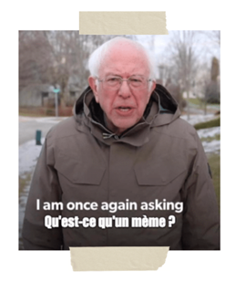Mais, avant de saisir le propos d’un mème, encore faut-il comprendre ce que c’est. Car s’il est plutôt courant de savoir ce que désigne une blague ou une plaisanterie ; malgré le fait que son sens nous échappe, il n’est pas moins sûr qu’il en vaille de même avec le même5. Parmi l’échantillon de personnes ayant répondu à notre questionnaire directif, six d’entre elles ont précisé ne pas être familières avec ce qu’était un même (cf. diagramme circulaire, ci-dessous). Aussi, pouvons-nous partir de cette observation, pour définir ce que peut désigner le terme « mème », qui constitue la pierre angulaire de notre étude ; alors, le mème Internet, quèsaco ?
Dans notre questionnaire, nous avons pu demander aux personnes le remplissant, de tenter de définir ce qu’était un mème. Huit d’entre elles, bien que familières avec le terme et ce à quoi il faisait allusion (d’après les réponses apportées à la question qui précédait) ont déclaré ne pas être capable d’en donner une définition. Quant aux tentatives de définition qui ont pu être apportées, ces dernières varient beaucoup et ne s’accordent pas toutes. Ces résultats montrent ainsi, que définir clairement les contours de ce que constitue un mème, n’est pas évident - alors même que 87,5% de l’échantillon d’individus de 12-25 ans ayant répondu au questionnaire, se disait être familier avec le mème en tant que tel.
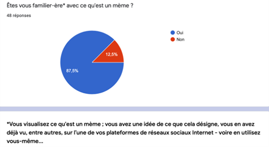Si le mème est susceptible d’englober diverses significations, nous devons nous accorder toutefois, autour de critères communs susceptibles d’apporter des éléments de définition du mème, de sorte que nous puissions mener notre exploration. Ce flou autour de la définition du mème numérique, pourrait s’expliquer en partie, par le fait que son emploi est assez récent (ses origines remontent aux pratiques d’individus qui, dans les années 90, commencèrent à s’approprier le web), et le terme n’aurait donc, pas eu le temps d’être admis et institutionnalisé par la langue. Mais aussi et surtout, par le fait que les mèmes soient, en quelque sorte restés une pratique vernaculaire propre à Internet.
Par ailleurs, bien que faisant le choix (délibéré) de ne pas associer le terme mème à celui d’ « Internet » ou de « numérique » dans notre question – toutes les réponses, à l’exception de deux d’entre elles, correspondent à une définition du mème Internet. En effet, il est important d’accoler le terme « Internet » ou « numérique » à celui de mème ; malgré le fait que, dans le langage courant, on parle désormais de mème tout court pour parler des mèmes Internet. Le terme « mème » est inspiré du mot « mimésis » qui signifie « imitation » en Grec ancien. Il a été pour la toute première fois utilisé en 1976 par Richard DAWKINS, un biologiste et éthologiste américain, spécialisé dans le comportement animal. Il développa une théorie selon laquelle, il existerait – comme pour tous les gènes qui transmettent des caractères biologiques – des éléments culturels, qui se répliqueraient et se transmettraient d’une personne à l’autre. Ces caractères culturels seraient ainsi, soumis à des mutations (comme les gènes le sont). Si cette théorie biologique du mème – appliquant les théories évolutionnistes darwiniennes aux éléments culturels – a pu être remise en question par la communauté scientifique, l’appellation quant à elle, est restée, et a été reprise dans le domaine du numérique, notamment.
Ainsi, le mème Internet désigne un contenu ou un objet culturel (une image mais, pas seulement : cela peut être aussi une vidéo, un texte, un GIF, un son ou une musique, par exemple) ; à visée humoristique et qui se diffuse de façon virale, sur Internet. Chaque internaute peut se réapproprier le contenu, en le modifiant et en créant de fait, sa propre version. Pour notre exploration, nous avons fait le choix de privilégier l’étude des mèmes prenant la forme d’images souvent pourvues de textes – qui constituent la forme la plus utilisée des mèmes, dans les groupes Facebook qui ont fait l’objet de notre enquête de terrain. Des sites de fabrication de mèmes, faciles d’accès et d’utilisation, proposent des modèles ou des patrons (templates, en anglais) tout en permettant de personnaliser ces images en y ajoutant un texte personnalisé. La signification du mème peut ainsi varier en fonction du texte que l’internaute choisit d’inscrire.
Les premiers requis pour comprendre un mème numérique seraient donc, d’une part, d’avoir accès à une technologie connectée à Internet pour les voir et éventuellement pouvoir les partager et en créer ; puis d’autre part, de maîtriser la langue, afin de lire et comprendre les messages que peuvent arborer ces mèmes. Les personnes qui ont répondu ne pas être familières avec le mème, semblent à priori, détenir ces deux premières conditions puisqu’elles ont répondu à notre questionnaire diffusé en ligne. Dès lors, d’autre(s) niveau(x) de compréhension du mème semblent intervenir. Des codes d’interprétation que l’on peut penser acquérir à mesure que l’on passe du temps sur Internet ; comme semble l’affirmer une réponse apportée lors de l’entretien réalisé auprès d’Antoine (prénom modifié par souci d’anonymat), créateur de mèmes actif sur Instagram, précisant que « c’est en voyant d’autres comptes similaires [qu’il a] voulu essayer » de créer et partager ses propres mèmes.
Nous retrouvons alors, indissociable à l’usage des mèmes Internet, l’idée d’un partage de connaissances et de créations entre les internautes : c’est grâce à leur participation (leur capacité à s’approprier les outils numériques et à se doter, à partir de ces derniers, de leurs propres normes) que le mème Internet est créé et relayé. Aussi, le concept de « culture participative » d’H. JENKINS permet d’étudier cet aspect et de décrire l’émergence du mème, comme celle d’une pratique culturelle propre au net et à l’usage des internautes.
En considérant les mèmes Internet comme un “folklore numérique”, on comprend mieux la nature presque autoréférentielle de la relation entre le mème et la culture qui le voit naître
RENAUD C., Conception d’un outil d’analyse et de visualisation des mèmes Internet, Le cas du réseau social chinois Sina Weibo, Thèse de Doctorat en Sciences de Gestion & Systèmes d’Information, 2014, p.48-49. ; le folklore désigne l’ensemble des pratiques et traditions populaires (d’un groupe, pays, région, etc.)
L’idée de l’émergence d’une pratique culturelle au travers de l’utilisation des mèmes, pourrait donc être un premier élément de distinction entre les internautes. Dans la mesure où la culture, en sciences sociales est ce qui lie, entre autres, les membres d’un groupe entre eux, par le partage d’un ensemble de symboles, de manières de faire, de significations et de valeurs, propres – touchant les domaines d’activités savantes, expressives ou populaires. Se distinguent alors, un « nous », entre les personnes qui partagent ces mêmes normes - ici les codes de fabrication et de lecture des mèmes - et des « autres » qui ne sont pas en mesure de saisir ces codes-là. Nous chercherons maintenant, à essayer de définir quels peuvent être ces codes. En voulant nous intéresser à la nature spécifique des mèmes publiés sur les groupes Facebook de notre corpus, nous avons sélectionné les dix derniers mèmes publiés sur chacun de ces groupes, soit un total de soixante mèmes numériques. En analysant cet échantillon, nous avons pu relever des motifs récurrents ; d’ordre graphique, d’abord : des photographies/dessins/images tirées de films, de séries ou même d’œuvre d’arts – constituent le patron des mèmes. Ce contenu iconographique est invariablement agrémenté d’un texte : d’une légende située en bas ou en haut de l’illustration ; ou bien par-dessus, servant parfois à qualifier, et attribuer un sens aux éléments présents sur le patron. Il n’y a dans ces mèmes, pas de véritable effort consacré à l’esthétique ou au style d’écriture ; une observation pouvant paraître assez qualitative et soumise à nos jugements subjectifs : mais, qui peut reposer sur le fait que la qualité de la définition et du traitement des images n’est pas souvent de mise (images pixélisées, superposées, dessins très sommaires, etc.) et on peut également noter, la présence de fautes d’orthographes ou de syntaxes dans les légendes – souvent intentionnels. Car, ce manque de soin fait figure aussi, de code propre au mème et répond à ses fins humoristiques.
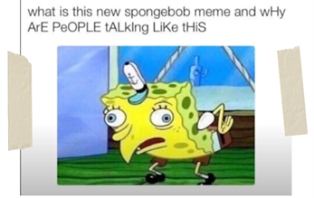Deuxième niveau de compréhension : le mème, ou l’émergence d’une pratique culturelle de communication mobilisant une forme d’intertextualité
Donc, nous avons pu décrire quelques codes concernant la structure visible des mèmes. Nous verrons désormais, comment ces mèmes – du fait de leur construction (vue plus haut) ouvrant la voie vers une certaine intertextualité – véhiculent des significations qui ne sont pas visibles à première vue mais, résultent d’une mise en relation du mème avec des éléments extérieurs auxquels il fait écho...
Lors de nos recherches sur les plateformes de réseaux sociaux numériques et groupes Facebook de notre corpus, alors même que nous étions bien informés sur ce que constituait un mème Internet, il nous est arrivé plus d’une fois, de ne pas saisir ou alors que partiellement, le message et le sens véhiculés par certains mèmes. Il semblerait que ce soit une chose qui arrive assez souvent, à en juger par les résultats du questionnaire, qui indiquent que parmi l’échantillon ayant affirmé être familier avec ce qu’était un mème : 94,6% des personnes ont déjà été confrontées à un mème sans parvenir à le comprendre. Ainsi, au-delà de la connaissance des mèmes et des pratiques qui lui sont rattachées ; il existe d’autres niveaux de compréhension – qui ne sont pas du domaine du sensible (pas visibles).
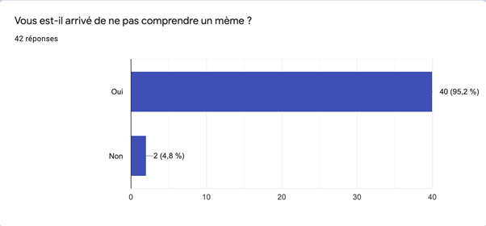Si un mème dérange dites-le en commentaire (peut-être que vous l'avez pas compris)
- Extrait de la description du groupe de mèmes « Meme your Assas (MYA) - Libérez les Associations».
En règle générale, nous encourageons les gens à être respectueux. Ce groupe est dédié à l'humour, qui peut parfois être ambigu et heurter la sensibilité des gens. Si vous avez un doute sur un message ou un commentaire, n'hésitez pas à contacter un modérateur et référez-vous toujours aux règles avant de le faire.
- Extrait de la description du groupe de mèmes « Sciences Po. Institute of Shitposting for Bourgeois Teens »
L’une des principales caractéristiques du mème est qu’il est drôle. Comme l’indique l’ensemble des termes que nous avons rassemblés ici, provenant des tentatives de définitions de mème, données par l’échantillon de personnes ayant répondu au questionnaire. Il s’agit d’une idée qui semble plutôt répandue et admise au sujet de l’utilisation des mèmes. Liste des substantifs et adjectifs qualificatifs tirés de l’ensemble des 34 tentatives de définition données (à l’exception, de trois d’entre elles) : humour, comique, drôle, amusante, rire, faire rire, humoristique, plaisanterie, blague, moquer, dérision.
Or, comme les deux extraits (ci-dessus) des descriptions disponibles au public, des groupes Facebook de publication de mèmes rattachés aux étudiants de la Faculté d’Assas (Paris II) et à SciencesPo, l’humour de certains mèmes, peut ne pas être accessible - soit ne pas être compris de prime abord. En nous penchant sur la nature des mèmes qui sont partagés sur ce groupe, en étudiant le corpus d’images dont nous avons déjà parlé, on peut voir que la composition du mème, le choix et la disposition des éléments qui le composent (textes, fond/patron) influe a fortiori, sur la compréhension de ce dernier. Si l’on prend les contenus iconographiques (dessins, photographies, etc.), on peut voir que beaucoup convoquent des références culturelles externes (aux pratiques culturelles liées aux mèmes en tant que tels) : aussi retrouve-t-on des références aussi bien cinématographiques, que littéraires, ou politique, etc. A titre d’exemple, plusieurs mèmes faisant partie de cet échantillon, sont composées d’images extraites de la série Squid Game, disponible sur Netflix (diffusée le 17 septembre 2021, elle a rencontré une grande notoriété dans le monde entier).
Exemples de mèmes – parmi les dix derniers mèmes – publiés sur trois des six groupes Facebook de notre corpus ; tous reprennent comme fond iconographique, des images de la série Squid Game.
Les personnes n’ayant pas visionné la série ou bien n’ayant aucune idée du synopsis, peuvent ne pas saisir de façon exhaustive, la signification du mème. Aussi voit-on une nouvelle distinction s’articuler autour de l’utilisation de références culturelles autres que celles en rapport avec la fabrication des mèmes. De même, ces références culturelles ne se reflètent pas seulement sur l’image utilisée mais, aussi dans le texte : les formules employées, les expressions qui peuvent renvoyer à des références culturelles externes.
L’intertextualité est donc inhérente à la lecture d’un mème – de même que l’humour qui lui est propre. L’objet culturel qu’est le mème, entretient ainsi avec d’autres objets et médias culturels un ensemble de relations, qu’on rapproche de façon à mieux comprendre le mème et pouvoir l’interpréter. De fait, l’individu qui se retrouve face à un mème, est en mesure de projeter dans ce mème – alors qu’il croit seulement le décrypter - des éléments inscrits en lui par ses autres expériences, ses autres savoirs et connaissances de références culturelles. Autrement dit, tout individu investit en quelque sorte son « capital de références culturelles » concernant les mèmes d’une part, d’autres sujets et sa capacité d’analyse. Ce dernier doit ainsi, juger par lui-même de la pertinence des rapprochements qu’il établit, ce qui peut expliquer la remarque « peut-être que vous ne l’avez pas compris » (en parlant d’un mème) qui rappelle bien le fait qu’il faille un travail intertextuel pour saisir la signification du même et donc, son caractère humoristique.
Dernier niveau de compréhension : références autour de réalités et représentations partagées, qui renforcent la construction d’une identité commune
De fait, observer les mèmes partagés par les utilisateurs et les utilisatrices des réseaux sociaux numériques, c’est aussi obtenir des données permettant de les situer socialement, de connaître leur rapport à la culture, leurs loisirs et leurs connaissances de l’actualité.
Le partage de mèmes sur Internet peut dès lors, devenir un moyen de reconnaissance mutuelle entre individus qui se mettent, par leurs pratiques communes, à faire groupe : des utilisateurs d’Internet partageant alors, un espace et une culture similaires. Les groupes Facebook du corpus semblent présenter cette volonté, de rassembler des personnes autour des mèmes – et des références que ces derniers véhiculent.
Nous essayerons de vérifier si au travers des mèmes publiés sur ces groupes, et des activités et interactions qu’ils engendrent, nous pouvons identifier des références, des niveaux de compréhension ou tout autre élément pouvant dénoter de dynamiques de distinction des étudiants vis-à-vis des autres utilisateurs et si, potentiellement, ces dynamiques mènent à la formation, l’agrégation d’un groupe. En effet, l’adhésion est assez simple d’accès : quelques questions, parfois sur le niveau d’étude. Nous avons tous les trois envoyé une demande à chacun de ces groupes et n’avons reçu aucun refus ; parfois, sans même répondre correctement aux questions (série de lettres sans signification aucune). Cette observation laisse alors penser, qu’il n’y a pas de véritable volonté de créer un groupe qui soit trop inclusif – pour les groupes de notre corpus. Lors de l’entretien avec Antoine, nous lui avons demandé si lorsqu’il créait des mèmes, il avait une intention particulière, les destinaient à un public : ce à quoi il répondit de manière affirmative, « je fais en sorte de viser les étudiants en CPGE ou en études de bio ». Nous nous sommes alors demandé, si les mèmes publiés sur les groupes Facebook de notre corpus, pouvaient eux aussi être destinés aux étudiants – et comment cela se reflétait sur la nature des mèmes publiés ? Cette intentionnalité pouvait-elle, en visant une certaine frange de la population, susciter des distinctions et au niveau des individus, un sentiment d’appartenance à un groupe, par exemple ?
Nous nous sommes alors de nouveau, penchés sur l’échantillon des soixante mèmes récoltés sur les groupes Facebook de notre corpus, tout en alimentant la suite de l’étude, de nos observations de publications antérieures. En vue d’identifier et d’étudier les sujets sur lesquels portent ces mèmes. Nous avons ainsi pu identifier cinq sujets principaux ; ce tableau représente la répartition des mèmes dans chacun des groupes, selon les sujets sur lesquels ces derniers portent.
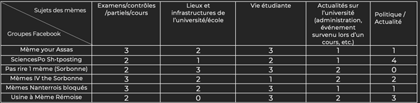Il semble toutefois, important de noter que de parler d’une « communauté étudiante » comme d’un donné, d’une évidence, peut être maladroit. L’évidence d’une identité étudiante pouvant être nuancée (l’identité étudiante est diffuse : entre les personnes effectuant des allers et retours entre l’institution universitaire/estudiantine et le marché du travail, la situation de retraités venant suivre des études pour parfaire leur formation, ou des étudiants internationaux, etc. la liste est longue). Mais, bien qu’il existe une diversité indéniable entre les divers profils étudiants ; nous pouvons identifier des représentations et des expériences partagées qui peuvent alors, prétendre constituer un socle commun pour ce qui peut s’apparenter à un ensemble, un groupe « étudiant ». Dans le cas des groupes de mèmes étudiants, de notre corpus (qui concernent des formations en sciences humaines et sociales – et politiques entre autres) nous pouvons voir, au travers des sujets sur lesquels portent les mèmes publiés, cinq grands axes se dessiner : tout ce qui concerne les études en elles-mêmes (contenus des cours, examens, partiels, etc.) ; l’espace « campus », les lieux et infrastructures de l’école (des lieux communs qui permettent le rapprochement spatial, pouvant fournir un cadre identitaire aux étudiants) ; la vie étudiante (recherche d’un logement, vie associative, etc.) ; l’actualité de l’établissement dans lequel les étudiants sont formés (au sujet de l’administration, un événement survenu lors d’un cours, etc.) et enfin, l’actualité avec une prévalence de sujets politiques.L’identité étudiante ne possède cependant pas de frontières définies ; encore une fois, des différences d’expériences et de représentations peuvent exister au sein de ces catégories. Néanmoins, ces résultats nous montrent que des références qui cette fois-ci, concernent exclusivement l’expérience étudiante propre à l’université ou l’école, peuvent se distinguer - définissant dès lors, une nouvelle distinction autour d’un niveau de compréhension des mèmes.
Les membres du groupe sont alors amenés à interagir autour de ces publications ; on retrouve l’usage du like (et autres réactions) mis en place par Facebook. Certaines personnes commentent également ces mèmes. Un phénomène intéressant et récurent que nous avons pu observer concernant ces interactions : c’est d’abord l’écart important qui sépare le nombre de likes au nombre de commentaires et ce, sur tous les mèmes publiés dans ces groupes. Mais surtout, le fait que la plupart des commentaires contiennent des tags ou identifications de personnes (voir ci-dessous). Ceci démontre que les individus en réagissant face à un mème, peuvent être amenés à vouloir « tagger » une autre personne ; lui montrer le mème, discuter de ce dernier, et surtout de ce à quoi il renvoie. Et donc, en vertu de références communes à l’échelle de leur vie personnelle et/ou quotidienneté.
Ainsi, à l’issue de l’étude de cette première hypothèse ; nous pouvons proposer une typologie des différents niveaux d’appréciation des mèmes publiés sur ces groupes Facebook. Cette typologie se divise en trois différentes couches, trois différents niveaux de compréhension qui se complètent.
Le premier niveau de compréhension d’un mème, qui est le plus général, le plus large, est la connaissance de ce qu’est un mème, soit d’avoir une idée de ce à quoi le terme renvoie, ainsi que des codes qui lui sont propres (à l’instar de l’utilisation de certaines polices, d’un certain style d’écriture). Ensuite, le deuxième palier, serait de comprendre les références culturelles utilisées souvent comme support à la réappropriation des créateurs de mèmes. Et enfin, le type de références qui permet de comprendre un mème concerne ou la vie passée à l’université ou l’école, dans laquelle les étudiants se trouvent, et qui sont les sujets au cœur de la création de ces mèmes.
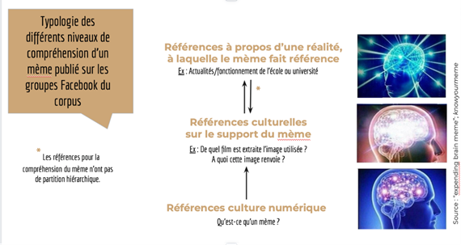Validité de l'hypothèse 1?
Ainsi, cette typologie nous montre que la compréhension et de facto, l’analyse d’un mème, nécessitent un glissement de l’attention, entre d’un côté, les éléments concrets et effectifs (que sont les textes et le contenu des mèmes) et de l’autre côté, ce qui est de l’ordre de l’immatériel, du sensible (soient les capacités d'affect vis-à-vis du contenu d’un mème). Pour comprendre un mème il faut donc être au fait, d’une part, de ce qui se passe sur Internet, de ses codes, mais, aussi, d’avoir une connaissance de ce qui se passe hors du net. Sans maîtrise des références rattachées à ces trois paliers, la compréhension du mème ne peut être que nulle ou partielle (cf. exemple ci-dessous d’une personne maîtrisant les premier et deuxième palier de compréhension mais, pas le troisième) :
Aussi, quant à la question de savoir si l’utilisation des mème Internet peut mener à des distinctions fondées sur le sentiment d’appartenance ; l’hypothèse 1, centrée sur l’objet du mème a permis de montrer qu’il constituait le fruit d’un agencement d’informations faisant ressortir une certaine signification, plus ou moins compréhensible pour l’internaute ; c’est dans ces différents niveaux de compréhension que se joue l’idée de distinction : selon les connaissances et références culturelles que l’individu détient ; il ou elle se sent inclus ou exclus. L’intertextualité propre à la nature des mèmes, du fait de leur recours à des références diverses - entraîne différents niveaux sémantiques – qui peuvent donner lieu au sentiment de faire partie d’un ensemble d’individus, d’un groupe, liés par le partage de mêmes références. Toutefois, cette assertion-là est à nuancer, dans la mesure où l’on n’a pas vu de réelles frontières dessinées par ces différents niveaux de compréhension, entre les individus. Elles avaient cependant, tendance à renforcer des liens déjà existant entre individus qui entretenaient déjà entre eux des liens sociaux.
Tout au long de notre exploration, nous nous sommes rendu compte que les memes étaient un moyen de se divertir en s’extirpant de la réalité parfois jugée trop banale. Pour la majeure partie des étudiants interrogés, le meme figure comme une forme de culture où les éléments mobilisés permettent de tisser des liens à travers la compréhension de certaines références. Cette appréhension de ces références et l’émotion burlesque qu’elle procure aux étudiants permet d’affirmer le sentiment d’appartenance.
Le sentiment d’appartenance se définit au sens large comme le fait pour un individu de se considérer et de se sentir comme faisant partie intégrante d'un groupe ou d'un ensemble social. Le sentiment d’appartenance mesure ainsi l’attachement et la reconnaissance ressentis par un groupe d’individus à l’égard d’une communauté. Cette notion de sentiment d’appartenance est à relier au concept des liens faibles théorisé par le sociologue américain Mark Granovetter. Dans sa théorie, le lien faible est celui qui lie l’individu à un réseau étendu et distant avec des personnes qu’il ne connaît pas forcément mais avec qui il partage des codes définis, ce qui lui permet de nouer des interactions fortes mais distantes. Ce qui est intéressant à noter est le fait que les individus seront davantage influencés par les relations distantes qu’ils se sont constitués sur les réseaux sociaux et autres plateformes numériques. Le sociologue écrit dans un article, “les liens faibles permettent de jeter des ponts locaux entre des individus qui, autrement, resteraient isolés .” Les memes internets et leurs divulgations à travers les groupes de memes sont un moyen de créer de la cohésion sociale à partir des liens faibles tissés entre les individus. Néanmoins, il est important de noter qu’il n’y a pas de figures centrales ou de personnes étant chargées de diriger ce groupe. L’appartenance aux groupes de memes sur Facebook est fondée uniquement sur le fait d’être abonné au compte et de réagir aux publications de memes, par des likes, des commentaires ou des partages. Il n’y a pas vraiment de liens existants entre les personnes abonnées qui dans la plupart des cas ne se connaissent pas forcément. Il y a un rapport utilitariste des groupes de memes où les internautes sont perçus que comme de simples consommateurs visionnant des memes. Dans cette optique, le modérateur du groupe n'a qu’un rôle de contrôle dans le sens où il accepte les personnes qui souhaitent faire partie du groupe et veiller à ce que les publications de memes répondent aux critères des codes partagés et définis dans le groupe en question.
“Utilisés autant pour la satire; le commentaire politique que pour le marketing, les mèmes reproduisent des pratiques antérieures à l’Internet (caricature, publicité, propagande, rumeur…) sous différentes formes et à différentes échelles.” Le professeur et chercheur allemand Christian Bauckhage qui a étudié une centaine de même parmis les plus largement diffusés sur Internet, a conclu que le mème mobilise ou renvoie à d’autres éléments culturels ou textuels, le plus souvent implicites.
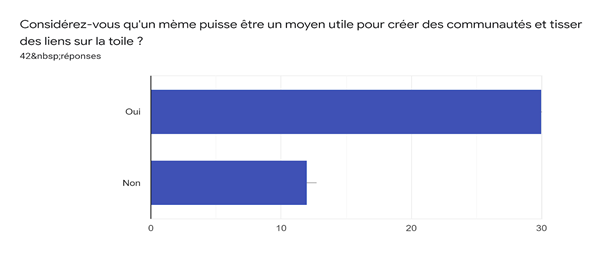Près de 71,4 % des personnes ayant répondu au questionnaire pensent qu’un mème est un moyen utile pour créer des communautés et tisser des liens sur Internet ou les réseaux sociaux. A la question, pourquoi crée-t-on et diffuse-t-on des mèmes sur Internet ? Certaines personnes sondées ont répondu que la création de mèmes répondait à des fins humoristiques. D’autres ont souligné que c’est pour faire passer un message soulevant un enjeu sociétal ou pour représenter une communauté. Dans certains cas, les mèmes sont utilisés pour mettre en œuvre le comique et la satire comme stratégie de contournement des interdits médiatiques afin de discuter des faits divers et d’actualités. Ayant un aspect anonymisé, le mème est un outil pour souder des individus qui ont des opinions divergentes (ou peu valorisées dans leur milieu social) et qui ressentent le besoin de s’exprimer avec des individus partageant les mêmes points de vue. Le mème a donc pour fonction d’appuyer ou de dénoncer un courant d'idées, de pensée voire certaines personnes par le ridicule. Il reprend en cela les codes de la caricature, dont le but est de procéder à une représentation satirique, outrée et déformée de quelque chose (évènement, une attitude, une émotion etc), dans le but de la discréditer. Cela marche aussi avec les opinions politiques de certaines personnalités médiatiques, comme nous pouvons le voir dans le cas des mèmes sur Eric Zemmour.
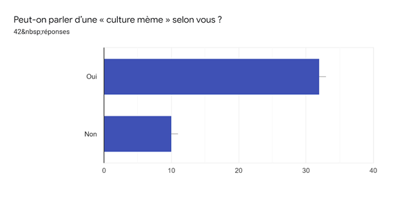Pour revenir à la notion de culture même, les réponses que nous avons collectées ont été diverses. En effet, plus de trois quarts des personnes sondées pensent qu’il serait exact de parler d’une “culture meme”. Toutefois, les personnes ont justifié ce raisonnement par différents arguments. Mais nous en sommes venus à la conclusion que le même est un outil de communication et de divertissement tellement répandu selon les pays, les cultures, les courants politiques et sur les réseaux sociaux, qu’il n’existe pas de culture même unique à proprement parler. Certains codes culturels sont nécessaires pour comprendre un meme et se sentir à l’aise au sein d’un groupe de meme sur Facebook, mais le meme est quelque chose de très popularisé sur le net et qui peut se construire sur une palette de références culturelles, sociales, politiques, philosophiques, cinématographiques etc. Le paradoxe se trouve aussi dans le fait qu’un meme a beau être compris et apprécié dans une communauté de meme, il ne le sera pas dans d’autres. La culture meme est donc étroitement liée à la culture générale d’un individu et d’un groupe de personnes qui se fondent sur leurs références culturelles individuelles pour approuver ou non un meme. De cette manière, un meme ayant une popularité importante est celui qui génère une mobilisation de références communes au plus grand nombre d’internautes. Cela peut être un personnage politique connu à l’échelle planétaire (comme Donald Trump), une chanson ou un clip populaire (à l’instar du Rickroll).
Ainsi, pour conclure ma partie, le même permet la construction d’une représentation intellectuelle, qui affecte la conscience d’une communauté partageant une certaine vision du monde au sein d’une même culture.
Plus le mème sera amusant, plus il sera partagé, modifié et gardera une chance de survivre dans le cyberespace. Le message transmis, souvent de type humoristique, voire ironique, se veut généralement contestataire, provocateur, voire scandaleux. Les mèmes réussis sont censés faire rire, afin de créer une communauté conceptuelle.
La satire politique mais aussi l’humour en tant que vecteur de messages et d’opinions est une pratique très courante, surtout en France, et le fait que la culture des mèmes soit une culture de l’humour sur Internet nous a fait poser la question, et ainsi émettre l’hypothèse que cet aspect politique se retrouvait aussi dans la culture des mèmes. Les mèmes seraient ainsi avec leur forme simple et la possibilité de références multiples, un vecteur efficace et répandu pour transmettre des messages et même des revendications se référant à des opinions, des idéologies et la politique.
Tout d’abord, en plus de l’humour et de l’usage de références dans la culture des mèmes, on remarque, particulièrement dans les milieux étudiants, que les mèmes faisant des références direct à des sujets politiques et idéologiques sont très courant, ce que nous a confirmé notre sondage, car 100% des personnes interrogées ont été confrontés à ce type de même. De par notre expérience lors de l’exploration et des réponses à notre sondage, on en conclut que le type du « mème partisan» est répandu et atteint une large part des utilisateurs.
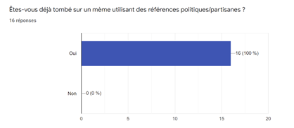Mais si la portée et le nombre de ce type de mème est avéré, il reste la question de l’efficacité de ces mèmes, et de l’importance de la mobilisation partisane dans ceux-ci, c’est-à-dire s’ils arrivent à convaincre et à mobiliser les utilisateurs vis-à-vis des propos qu’ils portent. Sur ce sujet, nos résultats sont moins clairs et montrent des expériences divergentes au sein de nos sondés, c’est-à-dire des étudiants, en majorité dans des cursus de sciences politiques. Ainsi, les résultats de notre sondage montrent que la moitié des interrogés ne prennent pas en compte la cohérence du message du même par rapport à leurs propres convictions, et ainsi que l’opinion exprimée compte moins que le caractère humoristique du mème, contrairement à l’autre moitié qui à plus tendance à interagir seulement avec les mèmes en adéquation avec leurs convictions politiques. On retrouve ces opinions dans les questionnaires individuels que nous avons réalisés, où les personnes interrogées rapportaient apprécier « l’humour noir », et trouvait même parfois drôle les « mèmes racistes », voyant une forme de blasphème et d’exutoire d’idées rejetés dans d’autres contextes que les mèmes, mais rigolant aussi de l’absurdité des idées présentées. Nous avons ainsi observé ce point-de-vue acceptant tous les mèmes, même ceux différant drastiquement de leurs opinions, car tant que le même n’est pas directement insultant, il est considéré comme de l’humour sarcastique.
Les mèmes partisans seraient donc efficaces en termes de transmission de messages et de viralité, mais ne marcheraient pas forcément pour convaincre et mobiliser les utilisateurs autour de leurs idées politiques ou idéologiques. C’est le résultat qu’on retrouve aussi dans l’étude Internet mème and Political Discourse : a study on the impact of internet mème as a tool in communicating political satire, qui montre que bien qu’efficace pour transmettre des messages et instruire les internautes sur des sujets politiques, les mèmes sont plutôt inefficaces pour rallier politiquement les personnes et influencer des votes par exemple. Cependant, les mèmes peuvent ainsi devenir un moyen d’éducation politique. Ainsi, l’immense majorité (plus de 95%) des personnes interrogées indiquent avoir déjà manqué de contexte ou de connaissances particulières pour comprendre un même, et s’appliquant au domaine politique, les mèmes peuvent donc devenir un outil d’éducation sur des sujets variés, comme le montre l’article Internet mème and Political Discourse : a study on the impact of internet mème as a tool in communicating political satire, indiquant le rôle potentiel des mêmes dans la construction d’une conscience politique.
De plus, un aspect revenant souvent sur le sujet des mèmes politiques, plus que la dimension de propagande, est celui de la satire. En effet, déjà très utilisée dans les médias plus traditionnels, la satire politique reprend les références politiques mais cette fois-ci dans le but de tourner en ridicule et de décrédibiliser un événement ou même une personne. Au cours de notre exploration nous avons ainsi beaucoup vu de satire s’attaquant directement à des personnalités politiques, et particulièrement dans le contexte actuel les personnalités d’extrême-droite comme Éric Zemmour, comme ce graphique provenant du groupe de mèmes Facebook SciencesPo Institute of Shitsposting for Bourgeois Teens, montrant l’irrationalité et le ridicule des propos racistes de ce dernier.
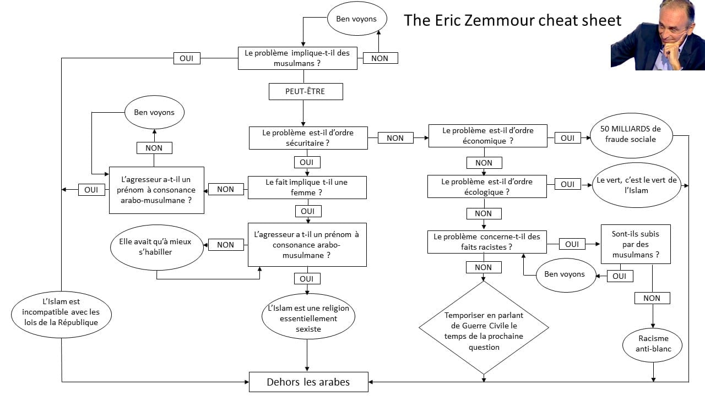Pour conclure, l’hypothèse selon laquelle les mèmes sont des vecteurs efficaces de messages politiques et forment ainsi une mobilisation partisane n’est que partiellement vraie. On a ainsi remarqué qu’effectivement le format du mème permet une diffusion efficace et parfois virale d’idées et d’opinions, mais que ce format n’est pas destiné à convaincre et influencer les idées politiques, mais cherche plus à atteindre une forme de satire qu’une forme de propagande. De plus, l'appréciation des mèmes en désaccord avec ses propres idées politiques semble varier selon les individus, certains y voyant une forme de sarcasme et d’ironie et appréciant donc tous les mèmes sans considération de leur accord avec le message, tandis que d’autres préfèrent interagir uniquement avec les mèmes véhiculant leurs propres idées politiques. Cependant, le milieu d’étude, c’est-à-dire les groupes d’étudiants, et particulièrement de sciences politiques, favorise la richesse des références politiques, et n’est sûrement pas représentative de tous les groupes de mèmes.Il n'y a pas donc toujours de vraies distinctions selon les opinions politiques mais le sentiment d'appartenance peut être renforcé par les références politiques communes.
En conclusion, les résultats de notre enquête et la réponse à nos hypothèses sont plutôt nuancés. L’intertextualité et l’usage de codes propres ont ainsi bien été vérifiés et peut créer un sentiment d’appartenance sur la base de références communes, mais l’importance de ces groupes en ligne peut être relativisé et dépend des groupes et de l’appréciation des individus. La deuxième hypothèse a quant à elle été validée, le succès d’un même reposant sur son humour, il réussit ainsi à faire rire et accorde un sentiment d’inclusion et de validation. La troisième hypothèse, avançant que le même peut servir de support pour la transmission d’idées politiques et crée ainsi un sentiment d’appartenance politique n’est pas tout à fait vraie : les mèmes sont bien efficaces pour transmettre des idées politiques, mais ne le sont pas pour tenter de convaincre, une grande partie des personnes ne se limite pas aux mèmes s’accordant à leurs idées. Les mèmes sont ainsi plus utilisés en tant que satire qu’en tant qu’outil de mobilisation autour d’idées, et il n’y a donc pas vraiment la création d’un sentiment d’appartenance partisane à travers les mèmes.
Notre exploration nous a ainsi permis d’étudier un sujet complexe, avec des limitations qui étaient le terrain d’étude des groupes Facebook étudiants, donc pas forcément représentatifs, et nos résultats ne peuvent donc pas tirer des conclusions générales sur l’ensemble de la population, mais montrent des tendances et des pratiques révélatrices.
1 : Selon un sondage IFOP commandé par le fabricant de mobiles Oppo, 62 % des utilisateurs de smartphone déclarent passer plus de temps devant leur écran mobile depuis le début du premier confinement. L’utilisation du smartphone par les 15-34 ans, montre une forte sollicitation des réseaux sociaux (62%). Des résultats qui rejoignent ceux d’un sondage réalisé en Chine, et publié en février 2020 par le cabinet d’études APP Annie, qui indique que le temps passé sur les smartphones avait alors augmenté de 30%.
2 : Une enquête nationale menée par le laboratoire IREDU a permis de dessiner les contours des conditions de vie étudiante durant la première période de confinement en 2020 : Les conditions de vie étudiante en période de confinement : Premiers résultats de l’enquête
3 : Une étude de l'Inserm et de l'université de Bordeaux (novembre 2021) a été menée auprès de 3 783 participants – recrutés sur les réseaux sociaux - entre mars 2020 et janvier 2021 soit une période couvrant les deux premiers confinements, ainsi que la période intermédiaire de relâchement des restrictions à l'été 2020. Le communiqué de l’article décrit les étudiants comme étant particulièrement vulnérables
face à une dégradation de la santé mentale lors de la pandémie. Données chiffrées : 36,6% des étudiants déclarent avoir eu des symptômes dépressifs, contre 20,1% des non-étudiants : Covid-19 : Le lourd impact de l’épidémie sur la santé mentale des étudiants, notamment pendant les périodes de confinements
4 : Un constat que l’on retrouve dans une étude menée sur le mode de propagation des mèmes internet publiée par Renaud Clément, Valérie Fernandez et GIlles Puel. CLÉMENT Renaud, FERNANDEZ Valérie, et PUEL Gilles « Les mèmes Internet ont-ils un mode de propagation spécifique ? Analyses à partir de topogrammes de mèmes de l’Internet chinois », Réseaux, vol. 195, no. 1, 2016, pp. 107-130. Les mèmes Internet ont-ils un mode de propagation spécifique ?
5 : Cette assertion repose sur le fait que les termes de « blague » et « plaisanterie » apparaissent dans le Dictionnaire de l’Académie Française (élaboré par l’Académie Française, l’institution chargée de définir la langue française), contrairement au substantif « mème » qui lui, n’y figure pas. Le terme figure cependant dans des dictionnaires tels que le Larousse. Il est important de noter à travers cet exemple, la distension entre l’usage et la règle, que pose le langage, et l’emploi d’un langage dit courant.
6 : Richard DAWKINS, The Selfish Gene, 1976.
7 : Le lien menant au site « meme generator » que nous avons utilisé pour fabriquer nos mèmes
AEBISCHER, Verena & OBERLÉ Véronique, Le groupe en psychologie sociale, 2006
JENKINS Henry, ITO Mizuko & danah boyd, Culture participative, 2017
KAPLAN, Fréderic & NOVA, Nicolas, La culture des mèmes, 2016
PAUGAM Serge, Les 100 mots de la sociologie, 2010
BONARDI Christine, « L'humour : un kaléïdoscope pour les sciences humaines ? », Le Journal des psychologues, 2009/6 (n° 269), p. 22-26. https://www.cairn.info/revue-le-journal-des-psychologues-2009-6-page-22.htm
BIASI (de) Pierre Marc, « INTERTEXTUALITÉ THÉORIE DE L' », Encyclopædia Universalis [en ligne], consulté le 14 novembre 2021.http://www.universalis-edu.com.acces-distant.sciencespo.fr/encyclopedie/theorie-de-l-intertextualite/
CARDON Dominique, « Pratiques créatives en ligne », dans : , Culture numérique. sous la direction de Cardon Dominique. Paris, Presses de Sciences Po, « Hors collection », 2019, p. 189-202. https://www.cairn.info/feuilleter.php?ID_ARTICLE=SCPO_CARDO_2019_01_0189
CLÉMENT Renaud, FERNANDEZ Valérie, et PUEL Gilles. « Les mèmes Internet ont-ils un mode de propagation spécifique ? Analyses à partir de topogrammes de mèmes de l’Internet chinois », Réseaux, vol. 195, no. 1, 2016, pp. 107-130. https://www.cairn.info/revue-reseaux-2016-1-page-107.htm
GINSBURG C. Jane, Copyright Use and Excuse on the Internet, Columbia-VLA JOURNAL OF LAW & THE ARTS, VOL. 24, P. 1, 2000; COLUMBIA LAW & ECONOMICS WORKING PAPER no. 178; COLUMBIA PUBLIC LAW RESEARCH PAPER NO. 16 (2000) https://scholarship.law.columbia.edu/faculty_scholarship/1224/
GRANOVETTER M., « The strength of weak ties », The American Journal of Sociology, 78, 1973, p. 1360-1380.
WARDLE, Marc, "The Karen Genre: Digital Memes as an Influencer of Political and Social Discourse" (2021). UNLV Theses, Dissertations, Professional Papers, and Capstones. 4218.https://digitalscholarship.unlv.edu/thesesdissertations/4218/
RENAUD, Clément. « Les mèmes internet : dynamiques d’énonciations sur le réseau social chinois Sina Weibo », Travaux de linguistique, vol. 73, no. 2, 2016, pp. 27-43. https://www.cairn.info/revue-travaux-de-linguistique-2016-2-page-27.htm
VINOKUROVA, Valentina "Memes: Learning, Bonding, and Emotional Support in Times of COVID-19," Russian Language Journal: Vol. 71 : Iss. 2 , Article 14. 2021 https://scholarsarchive.byu.edu/rlj/vol71/iss2/14/
WOCH Agnieszka et NAPIERALSKI Andrzej. “La « norme » et les échanges en ligne : une étude des mèmes politiques des internautes polonais” Dans La Linguistique, vol.52, no 1, 2016, p 151-172 https://www.cairn.info/revue-la-linguistique-2016-1-page-151.htm
LAPIN Tarin, “Here are some of the best Bernie Sanders memes from the inauguration” publié le 20 janvier 2021, New York Posthttps://nypost.com/2021/01/20/here-are-the-best-bernie-sanders-memes-from-the-inauguration/
PFEIFFER Alice, “Les mèmes engagés, une nouvelle forme de critique politique”, Publié le 18 juin 2020 mis à jour le 17 mars 2021. Les Inrockuptibles https://www.lesinrocks.com/actu/les-memes-engages-une-nouvelle-forme-de-critique-politique-168657-18-06-2020/
LELOUP Damien, “Le mème, ou l'art du détournement humoristique sur Internet”, publié le 1 mai 2012. Le Monde https://www.lemonde.fr/technologies/article/2012/05/01/le-meme-ou-l-art-du-detournement-humoristique-sur-internet_1693705_651865.html